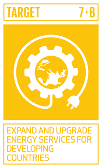
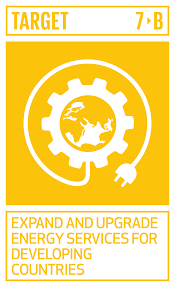

“Ensure access to affordable, reliable, Sustainability and modern energy for all.”
Sri Lanka has over 98% coverage of domestic electricity supply. 53% of total primary energy supply is accounted for by renewable sources. Rising dependency on imports and cost of energy can be viewed as challenges
When talking about the current use and supply of energy in Sri Lanka; Renewable energy sources such as wind and solar also use energy sources such as water, biomass waves and ocean thermal energy to harness energy in Sri Lanka.99.3% of Sri Lanka receives electricity. But some sections of the country do not have access to electricity. For example, the Norochcholai Coal Power Plant, the only coal power plant in Sri Lanka, supplies approximately 40% of the electricity demand. But the problem of the quality of the power supply arises because of the frequent power outages of the people nearby.In the recent past, a number of thermal power systems have been added to the power grid, and the country's electricity generation is dependent on imported fossil fuels, resulting in price shocks. They also come with significant social and environmental costs. Proposals to improve energy efficiency are stagnant in the country and initiatives are left entirely to market forces. The lack of a harmonious policy framework, along with implementation challenges, has hampered the development of clean energy in the country. While there is ample potential for renewable materials that have less impact on a large scale, despite their potential to reduce the cost of electricity to the consumer, focused efforts to develop them are not being pursued.
Sri Lanka does not have access to clean thermal energy for industrial purposes - it has to depend on unsustainable biomass, coal and oil. Although this is at a very low level in terms of national priorities, the development of natural gas can contribute to cleaner and less destructive industrialization. The transport sector is heavily dependent on road transport with high fossil fuel dependence. The development of community solar, micro and small water systems through private sector participation began in the late 90s. This was brought to the mainstream with solar roofing solutions and was recently introduced as the 'Solar War' or 'Battle for Solar Power'. This scheme is now being used successfully by large scale industrial and commercial enterprises
The momentum of renewable energy schemes has slowed down through monopoly utility barriers. The development of small hydropower and biomass projects has come to a complete standstill with developers taking it to court. Large-scale wind resources exist, and their development is limited by programs that have been hampered. Sri Lanka's current total energy requirement can be met by a 5GW wind power plant (potential 24.5 GW capacity) or solar installations from 324 km2 - less than 0.5% of the total land mass. This can be easily installed on reservoirs.
There is no corporate vision that integrates the energy sector in Sri Lanka, apart from the broader human and environmental well-being dialogues, in which the electricity and petroleum sectors are designed separately. For example, serious consideration of climate change and pollution does not go beyond mandatory accents in energy conversations, especially in the planning stage. Another step taken by the government in launching a new policy on energy mixing is to emphasize the 'sustainable energy' target of 66% and to set the coal and gas blend towards the sustainable energy target. This design system will hinder the aggressive push to achieve SDG. The power policy approved in 2008 is now obsolete and there is no guideline for achieving SDGs.
The following is the government's review of how sgd 7 is achieved in Sri Lanka.
The sustainable energy industry is expected to facilitate a number of economic activities and will grow rapidly in the coming years. There are enormous economic opportunities and huge economic benefits to countries developing and developing these clean energy technologies and using this clean energy. Sri Lanka is rich in renewable energy resources including biomass, hydropower, solar and wind. Sri Lanka aims to become a carbon neutral country by 2050, making the most of existing energy and developing clean energy resources in line with Sri Lanka's national energy policy and strategy. In preparation for this future, sustainable development, energy access, energy security and low carbon economic growth, local value creation and prosperity.
By 2016, the number of power outages was less than a billion, but demand for energy increased as the population continued to grow. The climate also changed slightly as people became accustomed to relying on fossil fuels. To achieve the targets set by SDG 7 by 2030; It is important to ensure quality energy supply to all the people of the country and to increase productivity by increasing investment in solar, wind and thermal energy. To should be provide clean and efficient energy services in Sri Lanka as well as in every country in the world by expanding the infrastructure and developing technology to help the environment around us generate energy
Global indicator framework for sustainable development goals to ensure quality energy service delivery as outlined above and SDG 7 set out some of the goals of the 2030 Agenda for Sustainable Development.
Three major targets and two additional targets have been set out under SDG 7 to improve this situation for the benefit of the country. and also, there are six indicators. It aims to empower resources and achieve policies by 2030.
By 2030, ensure universal access to affordable, reliable and modern energy services
By 2030, increase substantially the share of renewable energy in the global energy mix
By 2030, double the global rate of improvement in energy efficiency
By 2030, enhance international cooperation to facilitate access to clean energy research and technology, including renewable energy, energy efficiency and advanced and cleaner fossil-fuel technology, and promote investment in energy infrastructure and clean energy technology
By 2030, expand infrastructure and upgrade technology for supplying modern and sustainable energy services for all in developing countries, in particular least developed countries, small island developing States and landlocked developing countries, in accordance with their respective programmers of support
 
